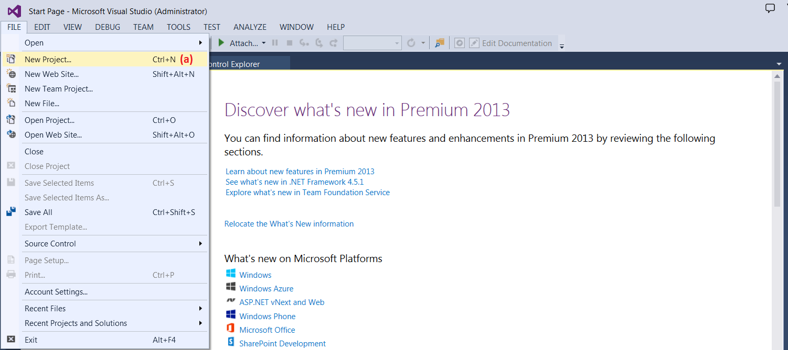
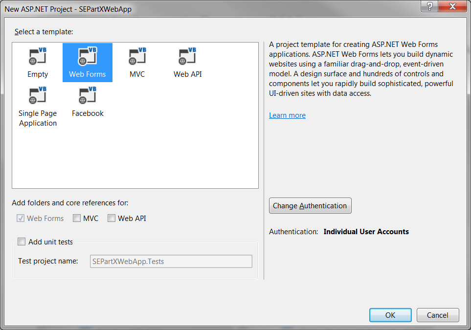
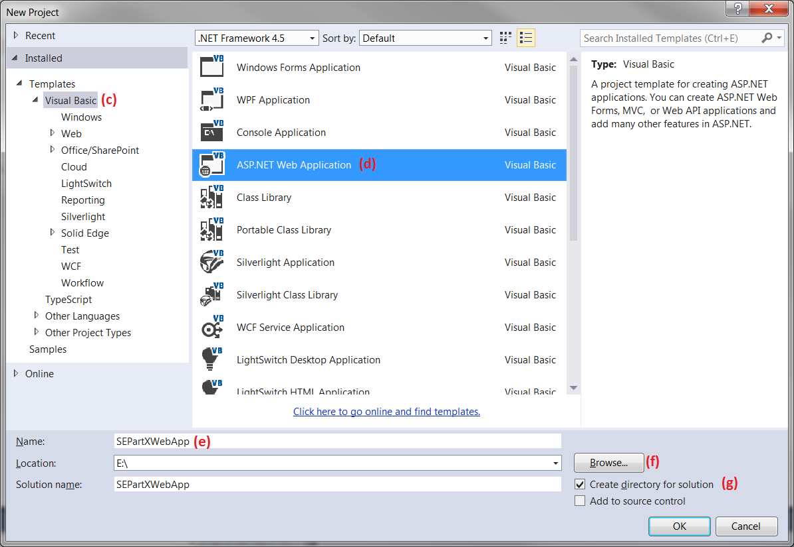

Solid Edge 2019 SDK
How to use SEPartX.ocx in ASP.NET web application?
SEPartX.ocx is a control which can be used in stand alone as well as in web based application.
Follow these steps use SEPartX.ocx control in an ASP.NET application.
1. Launch the Microsoft Visual Studio 2013 IDE using for e.g. Start -> All Programs -> Visual Studio 2013 -> Visual Studio 2013.
2. After staring Visual Studio create a new ASP.NET Web Application project in Visual Basic .NET using below steps.
a) On the "FILE" menu, click New, and then click Project.

(b) On the "New ASP.NET Project" dialog, click "Web Forms" as shown below.

(c) On the "New Project" dialog, click/expand "Installed", "Templates", "Other Languages", "Visual Basic"
(d) Click/Select "ASP.NET Web Forms Application" Template.
(e) Type the "SEPartXWebApp" Project Name string in the "Name:" field of the "New Project" dialog. This "SEPartXWebApp" will be automatically used and updated in the "Solution name:" field of the "New Project" dialog.
(f) Use the "Browse..." button in front of the "Location:" field of the "New Project" dialog and select the folder to store the Project for e.g. "E:\SEPartXWebAppDemo".
(g) Check the "Create directory for solution" checkbox (if not already checked) on the "New Project" dialog and click the "OK" button of the dialog.

3) You will now have an default Web Form "Default.aspx" displayed in the Microsoft Visual Studio IDE. The HTML version of the page will be automatically displayed to you, if not, click the "Source" button near the lower left corner of the Design window.
4) Replace all the existing code in the "Default.aspx" with the following code:
5) Click On the "VIEW" menu, select "Code" OR use the keyboard shortcut (Ctrl+Alt+0) so that the "Default.aspx.vb" code window is displayed in the Microsoft Visual Studio IDE.
6) Replace all the existing code in the "Default.aspx.vb" with the following code:
7) Modify the value of the strFilename String variable to point to the valid file on your machine which you want view in the SEPartX ActiveX Control for e.g. as below:
Dim strFilename As String = "C:\\TestPartCP.par"
8) Click On the "BUILD" menu, select "Build Solution" OR use the keyboard shortcut (F7) to build the "SEPartXWebApp" Project.
9) Click On the "DEBUG" menu, select "Start Debugging" OR use the keyboard shortcut (F5) to run/execute the "SEPartXWebApp" Project. This will display webpage with the SEPartX.ocx ActiveX control displaying the User specified file.
10) You can modify the value of the strFilename String variable if you want to view a different file in the SEPartX ActiveX Control.
If you could not use SEPartX.ocx in web based application then you can give a try now.